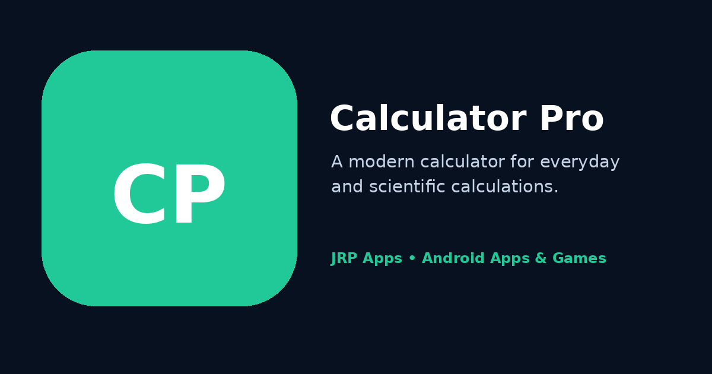

A focused Android calculator for quick arithmetic, scientific expressions, reusable values and everyday calculation tasks without a cluttered workflow.
Calculator Pro is designed to solve a familiar problem: people often need more than a basic four-function calculator, but they do not want an interface crowded with tools they rarely use. It brings arithmetic, scientific functions, history and practical utilities into one clear experience for quick totals or longer technical expressions.
The experience is organized around readable input and predictable actions. Expressions and results are presented separately so users can understand what was entered before accepting an answer. History helps recover earlier work, while memory controls reduce repeated typing when the same value is used across several calculations. This supports clear, efficient work during study, professional tasks or daily budgeting.
Calculator Pro also fits naturally beside other JRP tools. Users who calculate household costs can record the result in Money Mate, while students looking for a logic break can move to Sudoku. The goal is a dependable utility that feels useful immediately and remains comfortable after repeated use.
Features and Why They Matter
Standard and scientific modes. Standard controls keep everyday addition, subtraction, multiplication and division close at hand, while scientific functions support more advanced study and technical work. The separation keeps advanced tools available without complicating routine work.
Clear expression and result display. The entered expression remains visually distinct from the calculated result. Users can check signs, decimals, brackets and operators before relying on the answer, reducing display-related errors.
Calculation history. Previous calculations can be reviewed instead of recreated from memory. History is useful when comparing totals, checking a sequence of work, returning to an earlier answer or confirming how a result was produced.
Memory controls. Memory actions make it easier to reuse a value across several operations. They help with percentages, repeated rates, measurements and prices while reducing retyping errors.
Practical calculation tools. Supporting tools extend the calculator beyond a single expression while keeping the workflow focused. They help with recurring everyday needs and give users one consistent place for common numerical tasks.
Responsive Material Design interface. Controls are arranged for touch input with readable labels, consistent spacing and accessible targets. The responsive layout adapts across supported phone sizes and orientations.
Who Should Use It
Calculator Pro suits students working through mathematics or science exercises, professionals checking figures, engineers handling quick formulas, shop owners totaling prices, and families comparing expenses. A student can keep an expression visible while checking the result; a small-business user can reuse a tax or discount rate through memory; and a household user can calculate a monthly total before recording it elsewhere.
It is also useful for people who prefer a direct tool rather than a multifunction app with accounts, social features or complex onboarding. First-time users can begin with familiar calculator controls, while experienced users can reach scientific functions and history when the task becomes more demanding.
Privacy-First Data Handling
Calculations are designed to remain on the device during ordinary use. The core calculator workflow does not require a public profile, and users do not need to publish their expressions or results to complete routine tasks. This local-first approach is useful for personal, work or study calculations.
The app is developed to avoid requesting permissions that are not needed for its stated functions. Connectivity may be used for downloading updates, opening support resources, optional advertising or other clearly identified online services, but basic calculation does not depend on a continuous connection. Product-specific practices are explained in the Calculator Pro privacy policy.
JRP Apps follows a privacy-first philosophy: collect only what is reasonably necessary for operation, security, support or optional services, explain those uses clearly, and keep users in control of information they create.
Fast, Lightweight Android Performance
Calculator Pro is optimized for short, frequent sessions. Fast startup helps users reach the keypad when a calculation is needed immediately, and lightweight screens reduce unnecessary processing. Input, display updates and navigation are designed to remain responsive so pressing keys feels direct rather than delayed.
The Android interface follows Material Design principles with consistent components, readable typography and responsive layouts. Efficient rendering and restrained animation support battery-friendly use, while Android 11 and later compatibility provides a clear supported baseline. Regular testing focuses on startup time, stable calculations, screen adaptation and dependable behavior across updates.
Offline Use and Regular Updates
Core arithmetic, scientific calculations, history and local interactions are intended to remain useful without an active internet connection. Internet access can still be required for initial installation, Google Play updates, support links, advertising or optional connected services. Keeping the latest Play Store release installed is recommended for compatibility fixes and usability improvements.
App Preview

Promotional preview for Calculator Pro, highlighting its role as a modern Android calculator for everyday and scientific work.
Frequently Asked Questions
What can Calculator Pro calculate?
Calculator Pro supports everyday arithmetic and scientific calculations, with a clear expression display, reusable memory values, saved history and practical tools for common numerical tasks.
Is Calculator Pro suitable for students?
Yes. Students can use the standard and scientific controls for classroom exercises, homework and checking multi-step expressions while keeping the entered calculation visible.
Can I review earlier calculations?
The app includes calculation history so users can return to earlier expressions and results instead of entering the same work again.
Does Calculator Pro work offline?
Core calculation features are intended to work without a continuous internet connection. Installation, updates, support links, advertising or optional online services may still require connectivity.
Does the app require an account?
Ordinary calculator use is designed not to require a public account or profile. Any optional connected feature would be identified separately.
How does Calculator Pro handle privacy?
Calculations are designed to stay on the device during normal use, and the app aims to avoid permissions that are unnecessary for its calculator functions.
Which Android versions are supported?
The published website lists Android 11 or later as the supported requirement. Device compatibility can also be confirmed on the Google Play listing.
Where can I get help or report a problem?
Users can contact JRP Apps at support@jrphub.com with details about the device, Android version and the calculation or screen involved.
Related Apps and Games
Need to turn a calculated total into a spending record? Try Money Mate. For a creative utility, explore Style Text Pro, or switch to Sudoku for number-based logic practice.
Money MateA personal tracker for income, expenses and spending patterns.
Benefit: build a clearer record of everyday money activity.